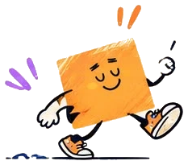

Respondé 6 situaciones y descubrí cuál es tu perfil ético.
UEP · 2026 · Una experiencia de integridad académica
ETHICS CHECK!
Antes de empezar
Acá no hay que impresionar a nadie.
Elegí lo que realmente harías, no lo que creés que deberías hacer.
«La integridad se revela cuando decidir no es tan fácil».
Respuestas anónimas · Resultado orientativo · Sin límite de tiempo
ETHICS CHECK!
¿Y vos qué harías?

¡Vamos por la siguiente situación!
Desafío completado
¡Tus decisiones hablan por vos!
¿Coinciden tus decisiones con tus valores?
La respuesta podría sorprenderte...
ETHICS CHECK!
TU RESULTADO
Pregunta para reflexionar
Este resultado es orientativo y tiene fines exclusivamente educativos. No constituye una evaluación psicológica ni una medición validada del comportamiento ético.